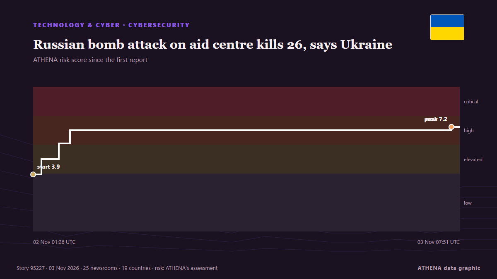

Russian bomb attack on aid centre kills 26, says Ukraine

Russia bombed an aid distribution centre and neighbouring shelter in southern Ukraine, killing 26 people, Ukraine's emergency services agency said. von RTÉ News
Unabhängig gemeldet von 25 Medien in 19 Ländern seit dem 2. Nov., zuerst von TASS (English); die Berichterstattung flaut ab. ATHENA stuft das Risiko als hoch ein (7.2/10), vor allem wegen der Schwere des beschriebenen Schadens und seiner geografischen und sektoralen Reichweite. Die Konfidenz liegt bei 89 % (hoch): 25 Medien bestätigen es unabhängig, bei einer mittleren Verlässlichkeit der Quellen von 76 %. Medien nach Land: Türkei (3), Irland (3), Vereinigte Staaten (3). Berichterstattung: 2. Nov. bis 3. Nov., 31 Stunden.
Warum es wichtig ist: Russlands Großangriff auf die Ukraine begann im Februar 2022. Dieser Tracker verfolgt die Kämpfe, Angriffe auf Infrastruktur und die Diplomatie rund um den Krieg, wie Redaktionen weltweit darüber berichten.
Was sich geändert hat: 12 neue Berichte von 12 Redaktionen in den 24 Stunden bis 3. Nov..
Erste Schlagzeile: Russian emergencies ministry's mobile app hit by cyberattack, TASS says
Schlagzeilen werden auf Englisch angezeigt, wie veröffentlicht.
Auf einen Blick
Ausgewählt, bewertet und geschrieben nach der veröffentlichten Methodik von ATHENA. Kein Redakteur greift in einzelne Ereignisse ein. So entsteht ATHENA ›
| 02 Nov 00:45 UTC | 6 |
|---|---|
| 02 Nov 02:45 UTC | 5 |
| 02 Nov 04:45 UTC | 2 |
| 02 Nov 06:45 UTC | 4 |
| 02 Nov 08:45 UTC | 3 |
| 02 Nov 10:45 UTC | 2 |
| 02 Nov 12:45 UTC | 1 |
| 02 Nov 14:45 UTC | 0 |
| 02 Nov 16:45 UTC | 2 |
| 02 Nov 18:45 UTC | 1 |
| 02 Nov 20:45 UTC | 0 |
| 02 Nov 22:45 UTC | 0 |
| 03 Nov 00:45 UTC | 1 |
| 03 Nov 02:45 UTC | 0 |
| 03 Nov 04:45 UTC | 1 |
| 03 Nov 06:45 UTC | 1 |
| 02 Nov 01:26 UTC | 3.9 |
|---|---|
| 02 Nov 02:02 UTC | 5.0 |
| 02 Nov 03:16 UTC | 6.1 |
| 02 Nov 04:04 UTC | 7.0 |
| 03 Nov 07:16 UTC | 7.2 |
| 03 Nov 07:51 UTC | 7.2 |
Warum diese Zahlen
Bedeutung
Risiko
Konfidenz
Die Berichterstattung – wer berichtete, und wann
Schlagzeile wie veröffentlicht · öffnet das Original- TASS (English) · RusslandRussian Emergencies Ministry’s mobile app hit by massive cyberattack
- APA (English) · AserbaidschanRussian emergencies ministry's mobile app hit by cyberattack, TASS says
- Al Jazeera English · KatarRussia, Ukraine air raid alert apps hit by cyberattacks after truce ends
- Times of India · IndienNuclear scare, fake radiation warnings: Cyberattacks hit Russia, Ukraine alert systems
- TRT World · TürkeiRussia, Ukraine report cyberattacks on emergency alert apps as ceasefire ends
- NDTV · IndienCyberattack Hits Russian Ministry App, Sends False Radiation Threat Warnings
- Free Malaysia Today · MalaysiaCyberattacks hit Russia, Ukraine after truce ends
- Ada Derana · Sri LankaCyber attacks hit Russia, Ukraine after truce ends
- Gulf News · Vereinigte Arabische EmirateUkraine reports 'cyberattack' on air raid alert system; Russia's emergency ministry app also 'compromised'
- eNCA · SüdafrikaCyber attacks hit Russia, Ukraine after truce ends
- Anadolu Agency (English) · TürkeiRussia, Ukraine report cyberattacks on emergency alert apps
- Kyiv Post · UkraineCyber Atacks hit Russia, Ukraine After Truce Ends
- France 24 English · FrankreichLive: Russia and Ukraine trade blame for cyber attacks as fragile ceasefire ends
- RTÉ News · IrlandRussian bomb attack on aid centre kills 26, says Ukraine
- AzerNews · AserbaidschanRussia's emergency alert app targeted in large-scale cyberattack
- TheJournal.ie · IrlandEmergency alert apps hacked in Russia and Ukraine as truce ends
- Irish Examiner · IrlandUkraine and Russia report hacks of emergency alert apps, spreading false warnings
- ABC News (International) · Vereinigte StaatenUkraine and Russia both report cyberattacks on emergency apps
- Arab Times · KuwaitUkraine and Russia both report cyberattacks on emergency apps
- France 24 English · FrankreichUkraine and Russia both hit by cyberattacks on emergency apps
- Stuff · NeuseelandUkraine and Russia report fake emergency alerts after cyberattack targets apps
- CBC News (alternative feed) · KanadaRussian bomb attack on aid centre in southern Ukraine kills 26, officials say
- PBS NewsHour World · Vereinigte StaatenUkraine and Russia both report fake emergency alerts after cyberattacks target apps as limited ceasefire ends
- PBS NewsHour · Vereinigte StaatenWATCH: Zelenskyy confirms Ukraine hacked back after Russia's cyberattack of its emergency alert system
- Khmer Times · KambodschaCyber attacks hit Russia and Ukraine after truce ends
- The Daily Star — page reader · BangladeschEmergency alert apps hit in Russia, Ukraine
- Kyiv Post · UkraineZelensky Confirms Ukraine Retaliated Against Russian Cyberattack by Hacking Moscow’s Emergency Alert App
- Free Malaysia Today · MalaysiaRussia downs hundreds of drones after Ukraine truce ends
- Anadolu Agency (English) · TürkeiRussia, Ukraine report cyberattacks on emergency warnings apps after Oleshky truce